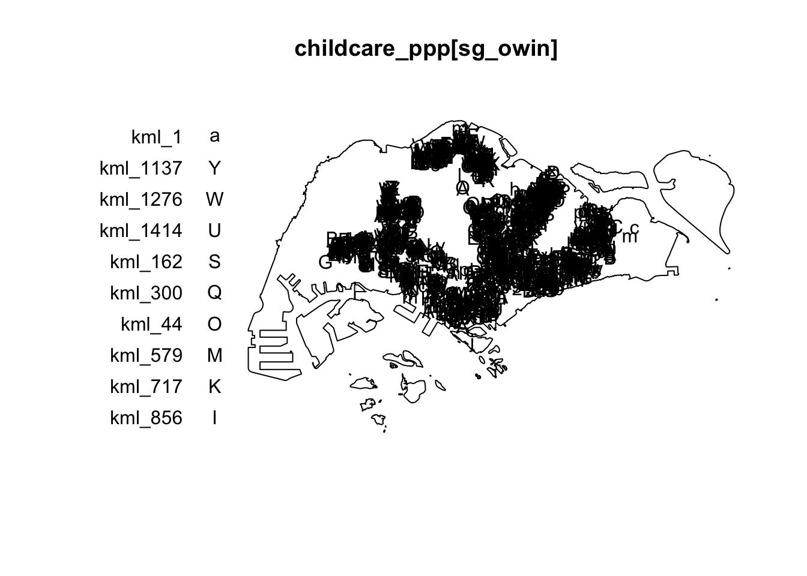
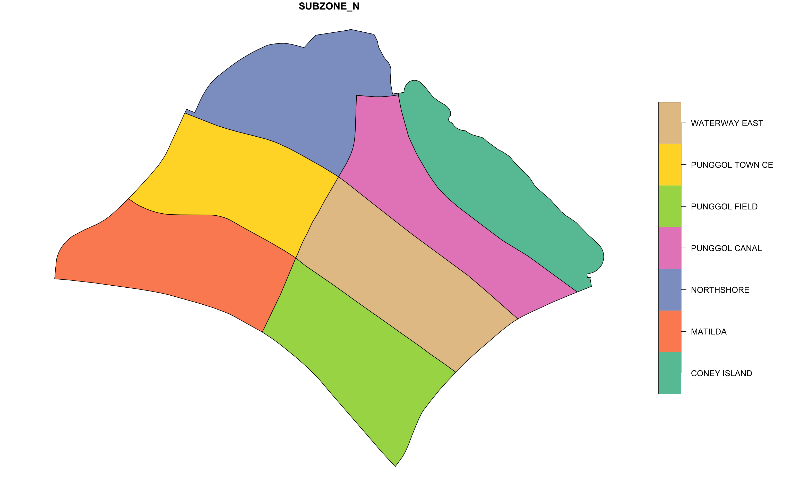
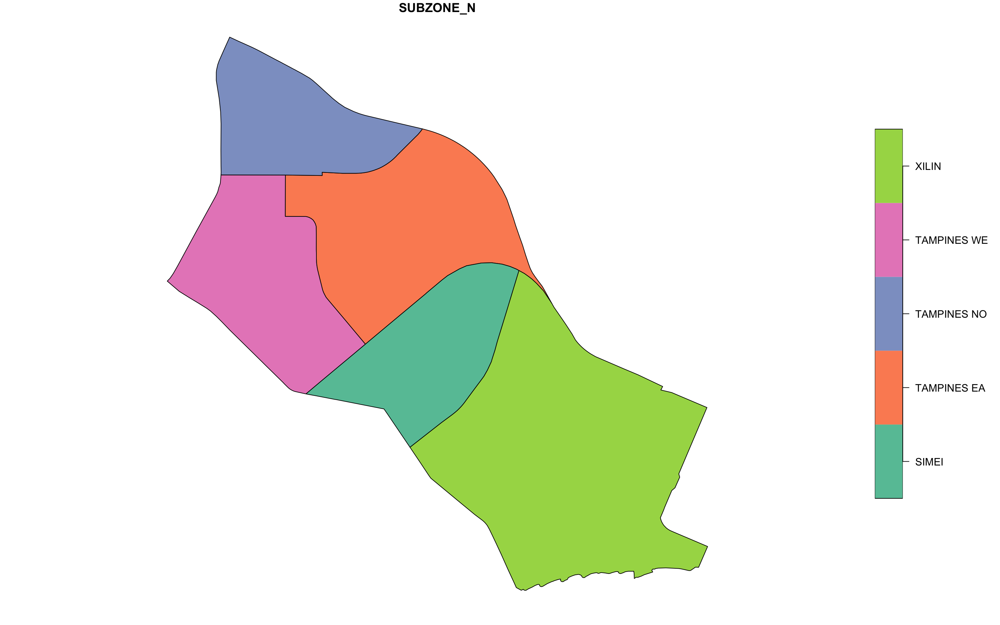
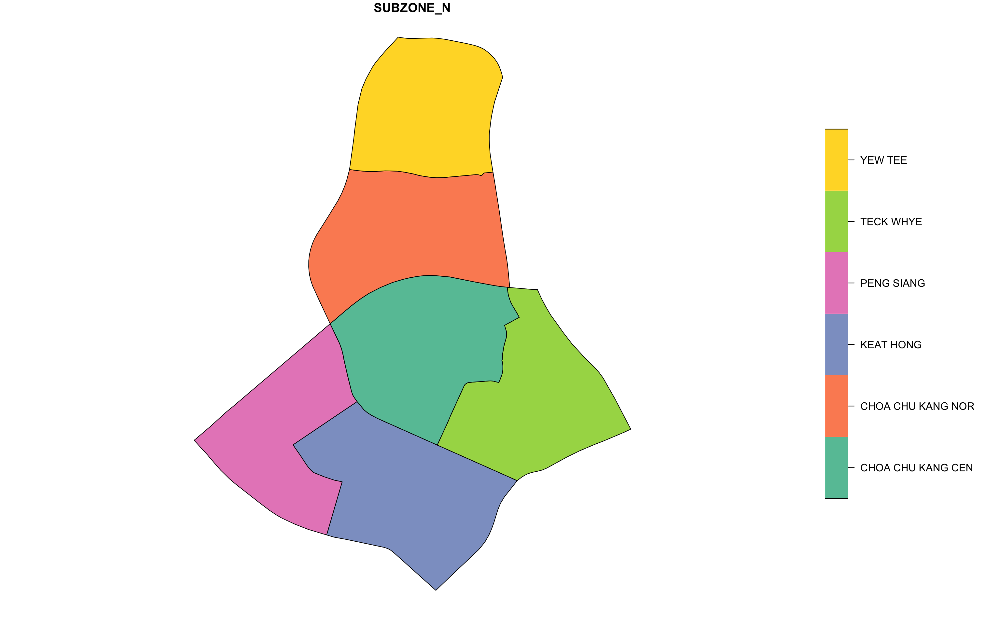
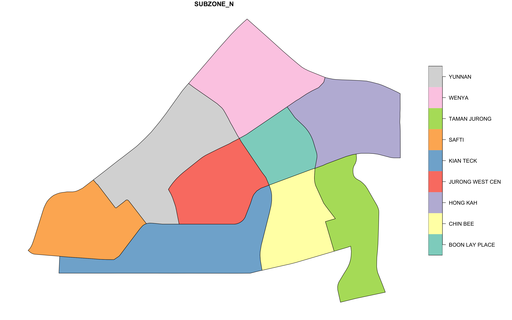

pacman::p_load(arrow, lubridate, tidyverse, sf, tmap, maptools, spatstat)In-Class Exercise 3: Kernel Density Estimation
In-class Exercise
In-class exercise 3
1.0 Setup
1.1 Dependencies
1.2 Importing and Changing CRS
childcare_sf <- st_read("data/geospatial/ChildCareServices.geojson") %>%
st_transform(crs=3414)Reading layer `ChildCareServices' from data source
`/Users/matthewho/Work/Y3S2/IS415/Website/IS415/InClassEx/ICE3/data/geospatial/ChildCareServices.geojson'
using driver `GeoJSON'
Simple feature collection with 1545 features and 2 fields
Geometry type: POINT
Dimension: XYZ
Bounding box: xmin: 103.6824 ymin: 1.248403 xmax: 103.9897 ymax: 1.462134
z_range: zmin: 0 zmax: 0
Geodetic CRS: WGS 84mpsz_sf <- st_read(dsn = "data/geospatial/", layer="MP14_SUBZONE_WEB_PL") %>%
st_transform(crs=3414)Reading layer `MP14_SUBZONE_WEB_PL' from data source
`/Users/matthewho/Work/Y3S2/IS415/Website/IS415/InClassEx/ICE3/data/geospatial'
using driver `ESRI Shapefile'
Simple feature collection with 323 features and 15 fields
Geometry type: MULTIPOLYGON
Dimension: XY
Bounding box: xmin: 2667.538 ymin: 15748.72 xmax: 56396.44 ymax: 50256.33
Projected CRS: SVY21st_crs(childcare_sf)Coordinate Reference System:
User input: EPSG:3414
wkt:
PROJCRS["SVY21 / Singapore TM",
BASEGEOGCRS["SVY21",
DATUM["SVY21",
ELLIPSOID["WGS 84",6378137,298.257223563,
LENGTHUNIT["metre",1]]],
PRIMEM["Greenwich",0,
ANGLEUNIT["degree",0.0174532925199433]],
ID["EPSG",4757]],
CONVERSION["Singapore Transverse Mercator",
METHOD["Transverse Mercator",
ID["EPSG",9807]],
PARAMETER["Latitude of natural origin",1.36666666666667,
ANGLEUNIT["degree",0.0174532925199433],
ID["EPSG",8801]],
PARAMETER["Longitude of natural origin",103.833333333333,
ANGLEUNIT["degree",0.0174532925199433],
ID["EPSG",8802]],
PARAMETER["Scale factor at natural origin",1,
SCALEUNIT["unity",1],
ID["EPSG",8805]],
PARAMETER["False easting",28001.642,
LENGTHUNIT["metre",1],
ID["EPSG",8806]],
PARAMETER["False northing",38744.572,
LENGTHUNIT["metre",1],
ID["EPSG",8807]]],
CS[Cartesian,2],
AXIS["northing (N)",north,
ORDER[1],
LENGTHUNIT["metre",1]],
AXIS["easting (E)",east,
ORDER[2],
LENGTHUNIT["metre",1]],
USAGE[
SCOPE["Cadastre, engineering survey, topographic mapping."],
AREA["Singapore - onshore and offshore."],
BBOX[1.13,103.59,1.47,104.07]],
ID["EPSG",3414]]st_crs(mpsz_sf)Coordinate Reference System:
User input: EPSG:3414
wkt:
PROJCRS["SVY21 / Singapore TM",
BASEGEOGCRS["SVY21",
DATUM["SVY21",
ELLIPSOID["WGS 84",6378137,298.257223563,
LENGTHUNIT["metre",1]]],
PRIMEM["Greenwich",0,
ANGLEUNIT["degree",0.0174532925199433]],
ID["EPSG",4757]],
CONVERSION["Singapore Transverse Mercator",
METHOD["Transverse Mercator",
ID["EPSG",9807]],
PARAMETER["Latitude of natural origin",1.36666666666667,
ANGLEUNIT["degree",0.0174532925199433],
ID["EPSG",8801]],
PARAMETER["Longitude of natural origin",103.833333333333,
ANGLEUNIT["degree",0.0174532925199433],
ID["EPSG",8802]],
PARAMETER["Scale factor at natural origin",1,
SCALEUNIT["unity",1],
ID["EPSG",8805]],
PARAMETER["False easting",28001.642,
LENGTHUNIT["metre",1],
ID["EPSG",8806]],
PARAMETER["False northing",38744.572,
LENGTHUNIT["metre",1],
ID["EPSG",8807]]],
CS[Cartesian,2],
AXIS["northing (N)",north,
ORDER[1],
LENGTHUNIT["metre",1]],
AXIS["easting (E)",east,
ORDER[2],
LENGTHUNIT["metre",1]],
USAGE[
SCOPE["Cadastre, engineering survey, topographic mapping."],
AREA["Singapore - onshore and offshore."],
BBOX[1.13,103.59,1.47,104.07]],
ID["EPSG",3414]]1.3 Deriving Coastal Outline
sg_sf <- st_union(mpsz_sf)Important: 1 Liner conversion
childcare_ppp <- as.ppp(childcare_sf)
summary(childcare_ppp)Marked planar point pattern: 1545 points
Average intensity 1.91145e-06 points per square unit
Coordinates are given to 3 decimal places
i.e. rounded to the nearest multiple of 0.001 units
marks are of type 'character'
Summary:
Length Class Mode
1545 character character
Window: rectangle = [11203.01, 45404.24] x [25667.6, 49300.88] units
(34200 x 23630 units)
Window area = 808287000 square units1.4 Removing Duplicates
any(duplicated(childcare_ppp))[1] FALSEchildcare_ppp_jit <- rjitter(childcare_ppp,
retry=TRUE,
nsim=1,
drop=TRUE)
any(duplicated(childcare_ppp_jit))[1] FALSEAnother one-liner
sg_owin <- as.owin(sg_sf, "owin")
sg_owinwindow: polygonal boundary
enclosing rectangle: [2667.54, 56396.44] x [15748.72, 50256.33] units2.0 Simple Visualisations
2.1 Plot the ppp object within the owin
plot(childcare_ppp[sg_owin])
2.2 Using the filter method
pg = mpsz_sf %>% filter(PLN_AREA_N == "PUNGGOL")
tm = mpsz_sf %>% filter(PLN_AREA_N == "TAMPINES")
ck = mpsz_sf %>% filter(PLN_AREA_N == "CHOA CHU KANG")
jw = mpsz_sf %>% filter(PLN_AREA_N == "JURONG WEST")Extras
par(mfrow=c(2,2))
plot(pg["SUBZONE_N"])
plot(tm["SUBZONE_N"])
plot(ck["SUBZONE_N"])
plot(jw["SUBZONE_N"])